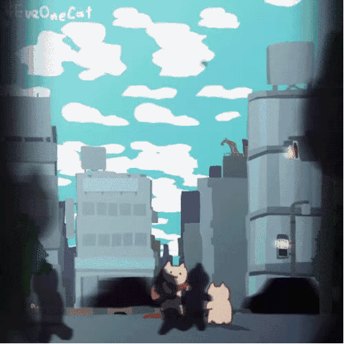

今天硬逼着自己看了几个小时javascript入门书。 真的是非常不好的体验，所有的内容都太过于抽象了。 这一个月学习前端以来，越来越不想出门与人打交道。 感觉太麻烦了，对着电脑我能够自然的放松自己。 虽然学习状态一直不好，总是感觉放假就这么呆在家里，荒废了。 朋友圈各种晒旅游的，某人一直催促陪伴出门游玩。 一切都显得那么的让人烦躁。 就想呆在家里不出门啊，烦不烦。 现在是凌晨三点半，我不知道我现在这样的生活状态还会持续多少年。 我也知道这样不好，我也知道这样身体会越来越差。 可是我就是喜欢夜晚的清净，无人干扰的可以做一些自己想做的事。 白天难以熬过的琐事，又可以一睡而过。 生而为人，真的活得很辛苦啊。 且行且珍惜。 